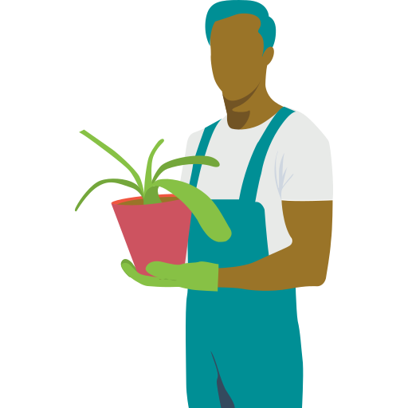

<mat-icon class="close-dialog-icon" (click)="dialogRef.close()">close</mat-icon>

<div fxLayout="column">
    <h2 class="page-header">My Account</h2>

    <div>
        <div class="login-image-container" fxFlex="30">
            
        </div>
        <div fxFlex class="form-wrapper" fxLayout="column">

            <mat-form-field floatLabel="never">
                <input matInput type="email" name="email" placeholder="Email" [(ngModel)]="user.email" required email>
            </mat-form-field>
            <mat-form-field floatLabel="never">
                <input matInput type="password" name="password" placeholder="Password" [(ngModel)]="user.password" required>
            </mat-form-field>
            <mat-form-field floatLabel="never">
                <input matInput type="number" name="zip" placeholder="ZIP code" [(ngModel)]="user.zip" required>
            </mat-form-field>
            <div fxLayout="row" fxLayoutAlign="center center">
                <h3>Your USDA Hardiness Zone:</h3>
                <h1>{{user.zone}}</h1>
                <mat-icon class="info-icon" matTooltip="A hardiness zone is a geographic area defined to encompass a certain range of climatic conditions relevant to plant growth and survival. It is used by Dig-It to calculate the optimal growing conditions for the climate in your location. The growing season in your area starts on {{getLastFrostDateString()}}, and ends on {{getFirstFrostDateString()}}."
                    matTooltipClass="dig-it-tooltip" #tooltip="matTooltip" (click)="tooltip.toggle()">help_outline</mat-icon>
            </div>

            <button mat-raised-button color="primary" (click)="editUser()">Save Changes</button>
            <button mat-stroked-button color="primary" (click)="onLogout()" fxHide.gt-sm="true">Logout</button>
        </div>
    </div>
</div>